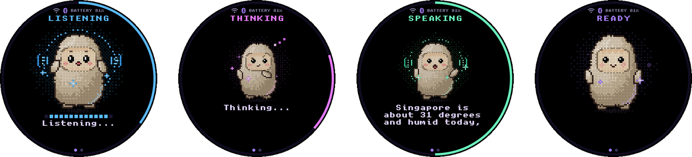
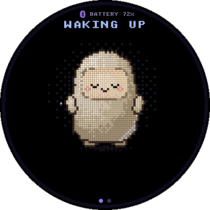
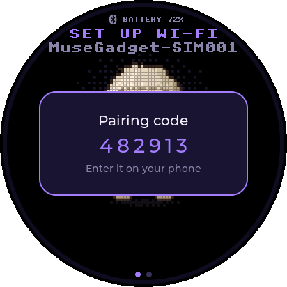
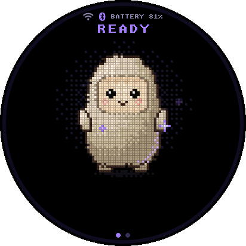
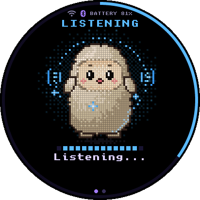
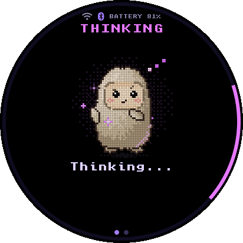
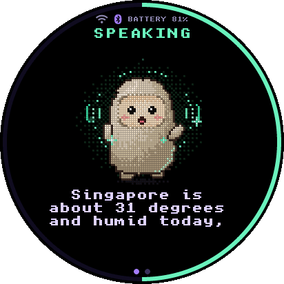
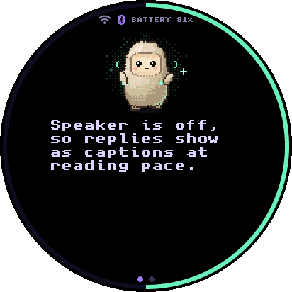
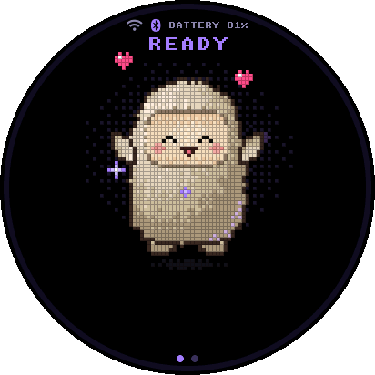

MuseBoard: porting Muse to a round ESP32-S3 display
This is the full story of how I got the Muse voice assistant running on a tiny round touchscreen board: every peripheral I had to bring up, the bug that kept the speaker from working, and how I made it answer out loud.

TL;DR
- I added support for the Waveshare ESP32-S3-Touch-LCD-1.46B to the open-source Muse gadget SDK: one ~550-line C file plus a config overlay.
- The speaker didn't play properly until I switched the I2S slots from 16-bit to 32-bit, because the DAC derives its clock from the bit clock.
- I wired replies to Muse's MP3 text-to-speech stream, so the board talks back instead of only showing captions.
- Code: github.com/Rosh2403/muse-gadget-sdk
What is a Muse gadget?
Muse gadgets are open-source devices you build yourself. You take an off-the-shelf ESP32 board (or a Raspberry Pi), flash it with the Muse device SDK, and pair it with the Muse app on your phone. From then on it's a small voice assistant: hold a button, ask something, and Muse answers on the device.
The ESP32 SDK already supports a long list of boards: M5Stack sticks, the SenseCAP Watcher, the ESP32-S3-BOX-3, several Waveshare round displays, and more. It didn't support the board I had, so I decided to port it. I call the result MuseBoard.
A conversation on the device goes like this:

The hardware
The board is Waveshare's ESP32-S3-Touch-LCD-1.46B. It's about the size of a large watch face, and it has everything a voice assistant needs on one PCB: a screen, a microphone, a speaker amp, buttons and a battery connector.
Here's the pin map I worked out from Waveshare's ESP-IDF example:
| Function | Pins | Notes |
|---|---|---|
| LCD (QSPI) | CLK 40, D0–D3 46/45/42/41, CS 21 | SPD2010, 412 × 412 |
| Backlight | GPIO 5 | LEDC PWM, 5 kHz, 10-bit |
| I2C | SDA 11, SCL 10 | Touch + TCA9554 (0x20) |
| Touch interrupt | GPIO 4 | |
| Speaker (I2S) | BCLK 48, WS 38, DOUT 47 | PCM5101 |
| Mic (I2S) | BCLK 15, WS 2, DIN 39 | |
| Talk button | GPIO 0 | The BOOT button |
| Power button | GPIO 6 | PWR |
| Power hold | GPIO 7 | Must be driven high at boot |
| Battery sense | GPIO 8 (ADC1 ch 7) | 200K/100K divider |
What you need
- A Waveshare ESP32-S3-Touch-LCD-1.46B (the 1.46 and 1.46C share the same layout) and a USB-C cable.
- ESP-IDF installed, so
idf.pyworks. - The Muse app on your phone, with Developer mode turned on in Settings → Devices.
- An SDK token from the Muse gadgets settings page. Every gadget needs one to pair.
Anatomy of a board port
The nice thing about this SDK is how small a port is. Pairing, Wi-Fi, the chat session, the avatar and the whole
UI are shared. A board only has to describe itself and provide a handful of functions. All of it goes into one struct,
muse_board_t. This is mine:
static const muse_board_t s_board = {
.name = "Waveshare ESP32-S3-Touch-LCD-1.46B",
.width = LCD_RES, /* 412 */
.height = LCD_RES,
.round = true, /* UI lays out for a circle */
.touch = true,
.diagonal_in = 1.46f,
.talk_button = "BOOT",
.power_button = "PWR",
.talk_hint = { LV_ALIGN_LEFT_MID, 18, 0 },
.power_hint = { LV_ALIGN_RIGHT_MID, -18, 0 },
.frame_ms = 40, /* 25 fps */
.init = init,
.display_start = display_start,
.set_brightness = set_brightness,
.panel_sleep = panel_sleep,
.audio_init = audio_init,
.mic_slot = 1,
.poll_buttons = poll_buttons,
.read_power = read_power,
.power_off = power_off,
/* ...plus a few lock/pause helpers */
};So the job is: write each of those functions for this hardware, add a Kconfig option and an sdkconfig overlay, and register the board with the build script. I went through the hardware one piece at a time.
Step 1: keep the power on
The first surprise: this board has a soft power latch. When you press PWR, the board gets power just long enough for the
firmware to grab GPIO 7 and hold it high. If the firmware doesn't, the board switches itself off again.
So that's literally the first thing init() does:
const gpio_config_t hold = {
.pin_bit_mask = 1ULL << POWER_HOLD_GPIO,
.mode = GPIO_MODE_OUTPUT,
};
ESP_RETURN_ON_ERROR(gpio_config(&hold), TAG, "power hold");
ESP_RETURN_ON_ERROR(gpio_set_level(POWER_HOLD_GPIO, 1), TAG, "power hold on");Powering off is the reverse: turn off the backlight and panel, drop the latch, wait for the button to be released, then go into deep sleep with the power button set as the wake source.
static esp_err_t power_off(void)
{
set_brightness(0);
esp_lcd_panel_disp_on_off(s_panel, false);
gpio_set_level(POWER_HOLD_GPIO, 0);
while (gpio_get_level(POWER_GPIO) == 0) {
vTaskDelay(pdMS_TO_TICKS(20));
}
esp_sleep_enable_ext0_wakeup(POWER_GPIO, 0);
esp_deep_sleep_start();
return ESP_FAIL;
}Step 2: I2C and the IO expander
The display and touch controller both need a reset pulse before they'll talk. On this board those reset lines aren't connected to the ESP32 directly. They hang off a TCA9554 IO expander on the I2C bus. That means the order matters: I2C first, then the expander, then reset pulses, and only then the display.
static esp_err_t tca_reset_pulse(uint8_t bit, int low_ms, int high_ms)
{
uint8_t out;
/* read the current outputs so we only touch one bit */
i2c_master_transmit_receive(s_tca, (uint8_t[]){ TCA9554_OUTPUT_REG }, 1, &out, 1, -1);
tca_write(TCA9554_OUTPUT_REG, out & ~bit); /* pull reset low */
vTaskDelay(pdMS_TO_TICKS(low_ms));
tca_write(TCA9554_OUTPUT_REG, out | bit); /* release it */
vTaskDelay(pdMS_TO_TICKS(high_ms));
return ESP_OK;
}
/* in init(): all pins as outputs, all high, then pulse each reset */
tca_write(TCA9554_CONFIG_REG, 0x00);
tca_write(TCA9554_OUTPUT_REG, 0xFF);
tca_reset_pulse(EXIO_LCD_RST, 100, 100);
tca_reset_pulse(EXIO_TOUCH_RST, 50, 50);Step 3: the round display
The panel is an SPD2010 driven over QSPI (four data lines), which is fast enough to push a 412 × 412 frame
without tearing. Espressif has a component for it, esp_lcd_spd2010, so setup is mostly config macros.
The backlight is a plain PWM pin, driven by the LEDC peripheral at 5 kHz with 10-bit resolution.
The quirk: the SPD2010 only accepts update windows that start and end on four-column boundaries. LVGL redraws only the parts of the screen that changed, and those "dirty areas" can start on any pixel. Send one that starts on column 13 and you get glitches. The fix is an LVGL event hook that widens every area before it's flushed:
/* SPD2010 update windows must start and end on four-column boundaries. */
static void round_area(lv_event_t *e)
{
lv_area_t *a = lv_event_get_param(e);
a->x1 &= ~3; /* round start down to a multiple of 4 */
a->x2 |= 3; /* round end up to the last column of a group */
}
Setting .round = true in the board struct tells the shared UI to lay everything out for a circle, so
the status bar, captions and progress ring all fit inside the screen.
Step 4: touch
Touch uses the SPD2010's touch controller over I2C. Two things needed handling.
First, ESP-IDF 6 rejects the zero-length write that the touch driver does before each read. I wrapped the panel IO's receive function so it skips the command phase:
/* IDF 6 rejects the touch driver's zero-length write before a plain read. */
static esp_err_t tp_rx_param(esp_lcd_panel_io_t *io, int cmd, void *param, size_t size)
{
(void)cmd;
return s_tp_rx(io, -1, param, size);
}Second, instead of reading the controller from inside LVGL's input callback (which would block the UI on I2C), a small background task polls it. It polls every 10 ms while a finger is down and backs off to 30 ms when idle to save power. A 35 ms lift timeout keeps a tap from flickering on and off between samples. LVGL then just reads the latest point under a spinlock.
for (;;) {
uint8_t count = 0;
if (esp_lcd_touch_read_data(tp) == ESP_OK) {
esp_lcd_touch_get_data(tp, &point, &count, 1);
}
int64_t now = esp_timer_get_time();
taskENTER_CRITICAL(&s_tp_lock);
if (count) {
s_tp_point = point;
last_us = now;
} else if (last_us && now - last_us >= TP_LIFT_MS * 1000) {
last_us = 0; /* finger has really lifted */
}
s_tp_down = last_us != 0;
taskEXIT_CRITICAL(&s_tp_lock);
vTaskDelay(pdMS_TO_TICKS(last_us ? TP_POLL_MS : TP_IDLE_POLL_MS));
}Swiping left on the avatar opens the settings page, where you can change brightness, volume and turn the speaker on or off.
Step 5: buttons
There are two physical buttons. BOOT (GPIO 0) becomes push-to-talk: hold it, speak, release. PWR (GPIO 6) turns the board on and off. The SDK has a GPIO button helper, so I only had to map the power button's events onto the power event bits:
static unsigned poll_buttons(void)
{
unsigned events = muse_gpio_button_poll(&s_talk);
unsigned power = muse_gpio_button_poll(&s_power);
if (power & MUSE_BTN_TALK_PRESS) events |= MUSE_BTN_POWER_PRESS;
if (power & MUSE_BTN_TALK_RELEASE) events |= MUSE_BTN_POWER_RELEASE;
return events;
}The talk_hint and power_hint in the board struct put small labels on the screen edge next to each button.
Step 6: battery (and an overflow)
The battery is measured through a 200K/100K resistor divider, so the ADC sees one third of the battery voltage.
Waveshare's reference code multiplies by 3 and applies a measured correction factor of 0.990476. To keep it in integer
math, I wrote it as mv * 3000000 / 990476. Then I map 3.3 V–4.2 V to 0–100%.
That first version had a bug. A full battery at 4.2 V puts about 1,400 mV on the ADC pin, and
1400 × 3,000,000 is 4.2 billion, well past the 2.1 billion limit of a 32-bit int. In fact
anything above ~715 mV overflowed, so the reading would have been garbage for any normal battery. The fix is to do the
multiply in 64 bits:
- out->battery_mv = mv * 3000000 / 990476;
+ out->battery_mv = (int)((int64_t)mv * 3000000 / 990476);
int pct = (out->battery_mv - 3300) * 100 / 900;Step 7: build, back up, flash
Each board gets an sdkconfig overlay. Mine selects the board, sets 16 MB flash, and turns on the octal PSRAM. PSRAM matters here: the TTS path keeps a 512 KB MP3 buffer, and Wi-Fi, Bluetooth and LVGL all want memory too. It also enables tickless idle and light sleep so the board isn't burning battery while it waits.
CONFIG_IDF_TARGET="esp32s3"
CONFIG_MUSE_BOARD_WAVESHARE_S3_146B=y
CONFIG_ESPTOOLPY_FLASHSIZE_16MB=y
CONFIG_SPIRAM=y
CONFIG_SPIRAM_MODE_OCT=y
CONFIG_SPIRAM_SPEED_80M=y
CONFIG_PM_ENABLE=y
CONFIG_FREERTOS_USE_TICKLESS_IDLE=y
# ...cache, Bluetooth and Wi-Fi memory tuningI also added a 146b shortcut to the SDK's board.sh script. Before flashing anything, back up the stock firmware:
python -m esptool --chip esp32s3 -p PORT read-flash 0 0x1000000 waveshare-s3-146b-backup.binThen build once, put your SDK token in the generated sdkconfig, and build and flash:
tools/muse/board.sh build 146b
# edit build-muse-waveshare-s3-146b/sdkconfig:
# CONFIG_GADGET_SDK_TOKEN="mgst_..."
tools/muse/board.sh build 146b
tools/muse/board.sh flash 146b PORTTo go back to the factory firmware: python -m esptool --chip esp32s3 -p PORT write-flash 0 waveshare-s3-146b-backup.bin
First boot and pairing
On first boot the avatar wakes up, and since the board isn't paired yet it starts advertising over Bluetooth. In the Muse app you pick the device starting with "MuseGadget", and the board shows a six-digit code that you enter on your phone. After that you give it Wi-Fi credentials from the app, and it lands on the Ready screen.



Rendered with the SDK's UI simulator at the board's 412 × 412 resolution (see below).
Now hold BOOT and talk:



Screen, touch, buttons and pairing all worked. Then I tried the speaker.
The speaker that wouldn't speak
The speaker didn't play properly. The audio path is ESP32 → I2S → PCM5101 DAC → NS8002 amp → speaker, and the problem turned out to be at the very first hop.
A quick I2S refresher
I2S sends audio over three wires: a bit clock (BCK) that ticks once per bit, a word select (WS/LRCK) that flips between
the left and right channel, and the data line. Each channel gets a "slot" of a fixed number of bits. So the bit clock
runs at sample rate × 2 channels × slot width.
Normally a DAC also gets a separate master clock. On this board, the PCM5101's master clock pin is tied to ground, which tells the chip to generate its own clock from BCK with an internal PLL. That makes the BCK ratio important.
I was sending 16-bit samples in 16-bit slots. At Muse's 16 kHz sample rate that's a BCK of 16,000 × 2 × 16 = 512 kHz, or 32× the sample rate. Waveshare's own example, and most ESP32 boards with a PCM5101, use 32-bit slots instead: 64× the sample rate, 1.024 MHz.
The fix was two lines in audio_init(). The samples stay 16-bit, only the slot gets wider:
i2s_std_config_t spk_cfg = {
.clk_cfg = I2S_STD_CLK_DEFAULT_CONFIG(MUSE_AUDIO_RATE),
.slot_cfg = I2S_STD_PHILIPS_SLOT_DEFAULT_CONFIG(
I2S_DATA_BIT_WIDTH_16BIT, I2S_SLOT_MODE_STEREO),
/* ...pins... */
};
+spk_cfg.slot_cfg.slot_bit_width = I2S_SLOT_BIT_WIDTH_32BIT;
+spk_cfg.slot_cfg.ws_width = 32;One more detail from the schematic: only the DAC's left output (OUTL) feeds the NS8002 amp, and a trimmer (R57) sets its gain. So it's effectively a mono speaker, which is fine for a voice assistant.
Testing the fix in isolation
Debugging audio through the whole chat flow is slow: pair, connect, talk, wait for an answer, listen. So I temporarily embedded a short raw PCM greeting clip in the firmware and played it right at boot. If I heard it, the I2S → DAC → amp path worked, independent of Wi-Fi, pairing or the server. Once the speaker worked, I took the clip back out.
Making Muse talk back
With a working speaker, there was one more gap. Out of the box, gadget replies were text only: Muse transcribed
your voice note and answered in writing, and the board showed it as captions at reading pace (16 characters per second).
The SDK left a marked spot in start_tts() in muse_chat_session.cpp for plugging in your own
text-to-speech service.
Instead of a third-party TTS API, I wired it to Muse's own MP3 stream. Here's the flow:
When a message is done, it's queued for speech. Voice replies can arrive with no text at all, so a message id is enough:
/* Queue speech whenever we have a message id; voice-modality replies may
* carry no text. Empty + no id stays unspoken. */
if (m.tts == TTS_NONE && m.id[0] && (m.len || muse_settings_speaker_on())) {
m.tts = TTS_QUEUED;
}Then start_tts() opens the stream for that message. The id gets URL-encoded first:
static bool open_tts_stream(int i, bool legacy)
{
char enc[160];
char path[200];
uri_encode(s_turn.msgs[i].id, enc, sizeof(enc));
snprintf(path, sizeof(path), "%s?message_id=%s",
legacy ? "/voice/tts-stream" : "/api/voice/tts-stream", enc);
int64_t id = open_stream(K_TTS, "GET", path, nullptr, "audio/mpeg", nullptr, true);
...
}The MP3 data is fed into the SDK's existing decoder (minimp3) as it arrives, and playback starts before the whole file has downloaded. The captions are timed against the decoded audio, so the words on screen keep up with the voice.
If the speaker is turned off in settings, if it's a typed console turn, or if the stream can't be opened, it falls back to the old behavior and shows the text at reading pace:
/* Console turns stay unspoken; speaker-off shows text at reading pace. */
if (s_turn.text || !muse_settings_speaker_on() || !m.id[0]) {
pace_as_text(m);
return;
}
s_turn.silent = false;
mp3dec_init(&s_turn.dec);
if (!open_tts_stream(i, false)) {
pace_as_text(m);
ESP_LOGW(TAG, "TTS open failed; showing %s as text", m.id);
return;
}
That's the moment it felt like a real device: press BOOT, ask a question, and the little round screen talks back.
Testing the UI without the board
The SDK ships a desktop UI simulator that compiles the real muse_ui.c and avatar renderer against SDL and
LVGL. Its window is 412 × 412, the same resolution as this board, which makes it handy for checking the round layout
without flashing anything. All the screen images in this post came from it.
You describe a state in a small text file:
face=speaking
caption=Singapore is about 31 degrees and humid today...
level=0.7
progress=0.5
wifi=connected
ble=connected
paired=true
battery=81
advance=1200and render it headless to an image:
cmake -S esp32/simulator -B esp32/simulator/build -G Ninja
cmake --build esp32/simulator/build --parallel
./esp32/simulator/build/muse_simulator --headless \
--scenario speaking.txt --run-ms 250 --screenshot speaking.ppm
Cleaning up for upstream
The work landed as a handful of focused commits:
- Add experimental Waveshare S3 LCD 1.46B support: the board file, Kconfig option, sdkconfig overlay, build script entry and docs (about 670 lines across 12 files).
- Avoid overflow in 1.46B battery scaling: the 64-bit multiply.
- Wire Muse TTS and fix 1.46B speaker playback: the 32-bit I2S slots, the TTS stream and the README update.
- Drop the personal speaker-check greeting: took the test clip back out so the change was clean enough for upstream review.
I used an AI coding agent (Cursor) alongside me for parts of this, especially the first draft of the board file from Waveshare's example. The debugging and testing on the real board I did by hand.
What I learned
- Read the vendor example first. The I2S slot width was in Waveshare's sample code the whole time. Their pin map and init order were the starting point for everything.
- Bring up one peripheral at a time. Power latch, then I2C, then display, then touch, then audio. When something breaks, you know which layer it's in.
- Get a tiny test signal working before the full system. A boot sound isolated the audio path from networking, pairing and the server.
- Do the integer math on paper.
mv * 3000000looks harmless until you plug in a real number. - Always have a fallback. If TTS fails, you still get captions. The device should never just go silent.
- Keep the upstream diff clean. Test hacks are useful, but they come out before the PR.
What's next
The port is still marked experimental. Battery readings and power behavior need more measuring on the real hardware, and I'd like to profile how long it lasts on a charge. If you have one of these boards, give it a try and let me know how it goes.